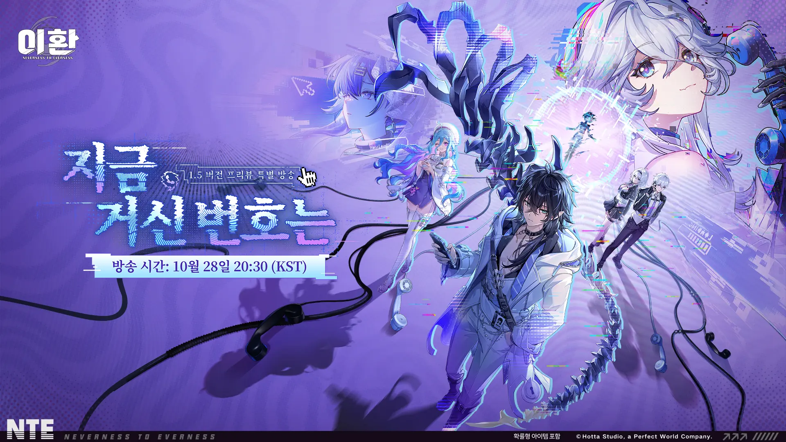
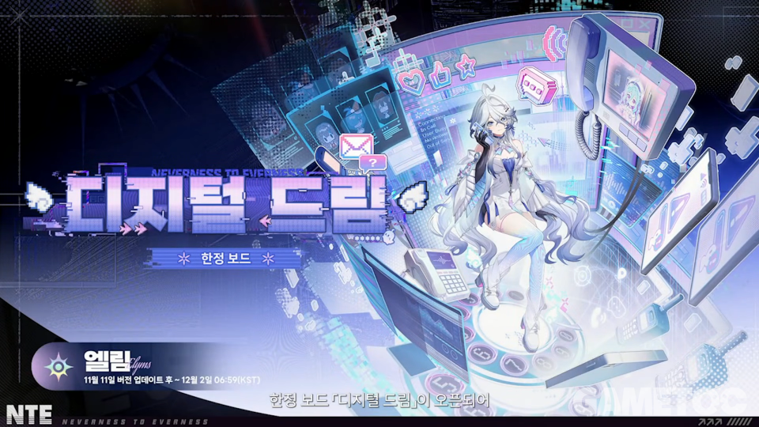
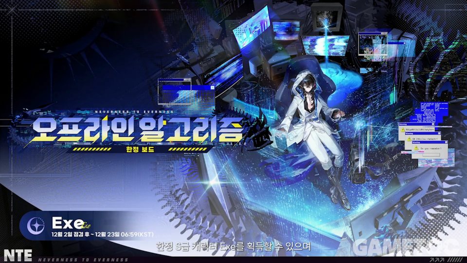
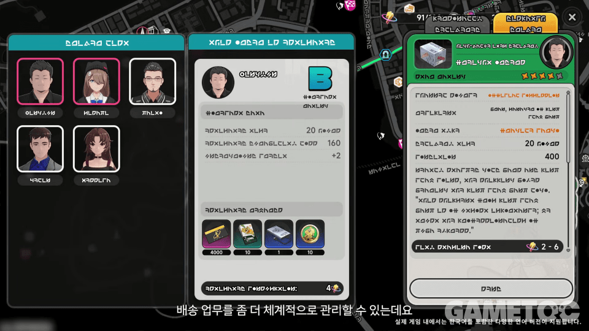
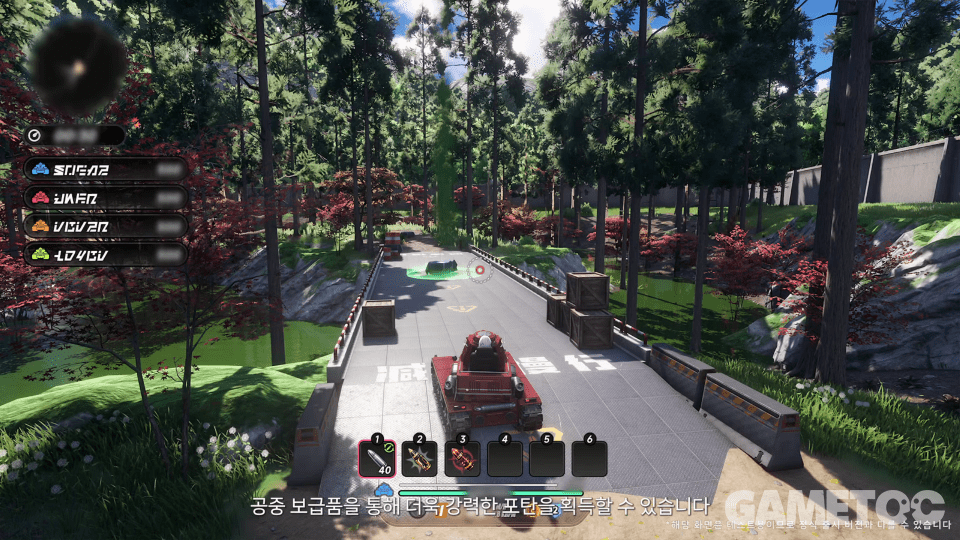
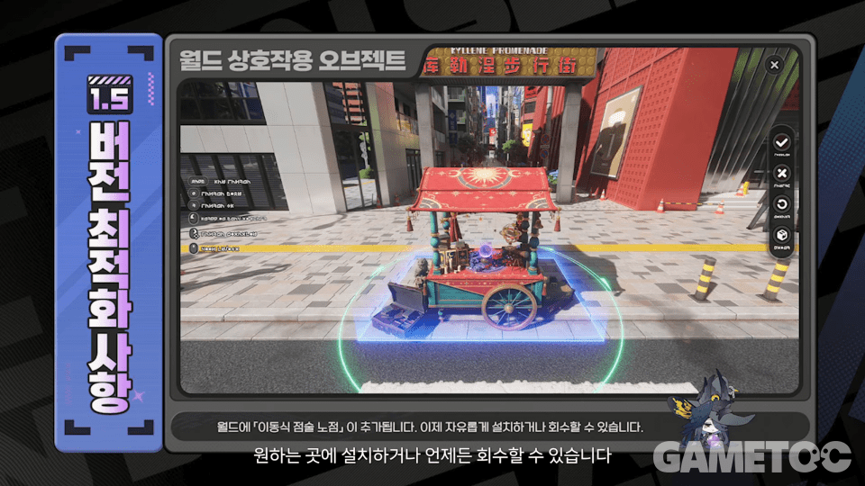
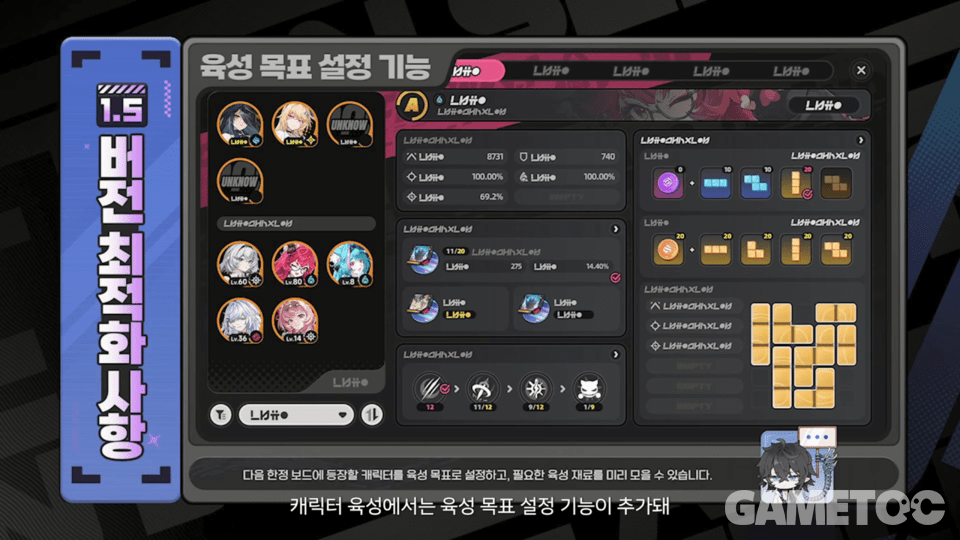

이환 1.5 방송 쿠폰 리딤코드 3종, 전반부 엘림ㆍ후반부 Exe 픽업과 콘텐츠ㆍ이벤트 일정 정리
10월 28일 밤 8시 30분에 공식 유튜브에서 이환 1.5 버전 프리뷰 특별 방송 '지금 거신 번호는'이 나갔는데요, 오늘은 그 내용을 한 번에 묶어 봤습니다. 아직 공식 공지 전이라 이름과 날짜는 방송 내용 기준이에요. 11월 11일 업데이트 전에 공지가 나오면 달라질 수 있어요.
제일 궁금하실 세 가지부터 말씀드릴게요. 교환코드는 3종이고 11월 2일 16:59(KST)까지, 전반부 픽업은 엘림, 후반부 픽업은 Exe입니다. 나머지 콘텐츠와 이벤트는 아래에서 차례로 풀게요.

10월 28일 20:30(KST)에 방송된 1.5 버전 프리뷰 특별 방송 예고 이미지
이미지 출처: 퀘이사존
1. 이환 1.5 방송 교환코드 3종, 11월 2일 16:59(KST)까지
이환 1.5 방송 교환코드는 INVALIDNUMBER, HIOLDFRIEND, EXENORESPONSE 세 가지이고, 셋 모두 11월 2일 16:59(KST)까지 입력할 수 있습니다.
| 교환코드 | 보상 | 공통 보상 |
|---|---|---|
| INVALIDNUMBER | 라이징 헌터 가이드 5 · 연한 염료 5 · 비틀 코인 4,000 | 환석 100 |
| HIOLDFRIEND | 베테랑 헌터 가이드 5 · 무채색 염료 5 · 비틀 코인 6,000 | 환석 100 |
| EXENORESPONSE | 특급 헌터 가이드 2 · 혼돈 염료 2 · 비틀 코인 12,000 | 환석 100 |
입력 방법은 이전 코드들이랑 똑같아요. 순서대로 따라 하시면 돼요.
- 게임 화면에서 ESC를 눌러 메뉴를 엽니다.
- 우측 상단 '…' 버튼을 누릅니다.
- 교환 코드 입력을 눌러 코드를 넣고 확인합니다.
- 보상은 우편함에서 수령합니다.
세 코드를 다 넣으면 환석만 300이 들어오는 셈이에요. 코드 이름이 전화ㆍ번호 느낌인 건 방송 제목 '지금 거신 번호는' 컨셉이랑 맞춘 것 같네요. 찰떡이죠. 보상은 헌터 가이드와 염료 같은 육성 재료가 중심이고, 비틀 코인은 EXENORESPONSE가 12,000으로 제일 큽니다. 11월 2일이면 끝이니 접속하는 김에 바로 넣어 두세요. 11월 2일 이후에 이 글을 보신다면 만료된 코드로 보시면 됩니다.
2. 이환 1.5 전반부 픽업, 엘림과 신쿠 복각
1.5 전반부는 11월 11일 업데이트 후부터 12월 2일 06:59(KST)까지이고, 한정 보드 '디지털 드림'의 엘림이 픽업이며 복각 보드는 신쿠의 '동틀 녘'입니다.
| 구분 | 전반부 (11/11 업데이트 후 ~ 12/2 06:59 KST) |
|---|---|
| 한정 보드 | 엘림 '디지털 드림' |
| 복각 보드 | 신쿠 '동틀 녘' |
| 아크 픽업 | 엘림 '에코 특간' · 신쿠 '결의 특간' |
| 신규 아크 | '연결음이 흐르는 동안' |
| 복각 아크 | '홍염의 신기루' |

전반부 한정 보드 '디지털 드림' · 엘림 (11월 11일 버전 업데이트 후 ~ 12월 2일 06:59 KST)
이미지 출처: 게임톡
엘림은 빛 속성 아군 지원형 캐릭터로, ETD 6팀 부대장입니다. 파티 딜을 높이고 협동 공격을 보조하는 쪽으로 소개됐고, 방송에서는 1.2 때 나온 '땅땅땅' 경매 조력자로도 얼굴을 비춘다고 해요. 신쿠 복각 보드 '동틀 녘'도 같은 기간에 돌아오니, 엘림 보드와 함께 보시면 됩니다.
주인장은 엘림을 〔뽑을 예정이에요 / 후반 Exe까지 보고 정하려고요 / 이번엔 쉬어 가려고요〕.
3. 이환 1.5 후반부 픽업, Exe와 카오스 복각
1.5 후반부는 12월 2일 점검 후부터 12월 23일 06:59(KST)까지이고, 한정 보드 '오프라인 알고리즘'의 Exe가 픽업이며 복각 보드는 카오스의 '돌아올 수 없는 길'입니다.
| 구분 | 후반부 (12/2 점검 후 ~ 12/23 06:59 KST) |
|---|---|
| 한정 보드 | Exe '오프라인 알고리즘' |
| 복각 보드 | 카오스 '돌아올 수 없는 길' |
| 아크 픽업 | Exe '암호키 특간' · 카오스 '사냥꾼 특간' |
| 신규 아크 | '점선 너머' |
| 복각 아크 | '만인의 갈망' |

후반부 한정 보드 '오프라인 알고리즘' · Exe (12월 2일 점검 후 ~ 12월 23일 06:59 KST)
이미지 출처: 게임톡
Exe는 암 속성 원거리 딜러로, 엘림과 같은 ETD 6팀에서 대장을 맡고 있어요. 기계 손과 디지털 스펙트럼을 쓰는 공격이 특징이라고 해요. 후반부는 12월 2일 점검 후부터 12월 23일 06:59까지이고, 전반ㆍ후반이 각각 21일이에요.
다만 무기 쪽 픽업, 뽑기 확률ㆍ천장 수치와 신쿠ㆍ카오스 복각 캐릭터의 속성ㆍ역할은 아직 알려진 게 없어요. 시련의 연회 내용과 보상도 마찬가지예요. 자세한 건 공지 나오면 다시 정리해서 올릴게요.
확인 위치: 10/28 방송 영상 화면 · 11/11 전 공식 사이트 1.5 공지 · 확인되면 이 박스를 실제 내용으로 교체해 주세요.
4. 보드 횟수 공유와 코스튬ㆍ스킨 특전
엘림과 Exe를 둘 다 노리신다면 횟수가 어디까지 합쳐지는지가 중요한데, 세 가지로 나뉘어요.
- 한정 보드의 주사위 횟수는 보드끼리 공유됩니다.
- 스킨 특전 누적 횟수는 보드별로 따로 셉니다.
- 아크 특간끼리는 뽑기 횟수와 확정 시스템을 공유합니다.
| 캐릭터 | 신규 쇼핑몰 코스튬 | 스킨 특전 누적 보상 |
|---|---|---|
| 엘림 | 'Y2K 미스터리' | '꽃밭의 추억' |
| Exe | '빗속의 영원' | '푸른 눈' |
주인장이라면 스킨 특전이 보드별로 따로 쌓이는 점부터 보고, 한쪽만 노릴지 둘 다 갈지 정한 다음에 돌릴 것 같아요. 어느 쪽이든 횟수 공유 범위는 업데이트 후 게임 안 안내 문구로 한 번 더 확인하시는 게 안전해요.
5. 이환 1.5 신규 콘텐츠 요약
1.5 신규 콘텐츠는 방송에서 스토리, 물류, 탱크 대전, 건물 전략까지 여러 갈래로 소개됐고, 항목별로 정리하면 아래와 같아요.
- 메인 스토리는 '디지털 바다: 다시 만나는 곳'이고, '없는 번호' 이야기라고 해요.
- 시티 익스프레스는 물류 경영 콘텐츠예요.
- 탄탄대로는 탱크로 붙는 4인 개인전이에요.
- 시티 오너는 타일로 건물을 놓는 전략 콘텐츠예요.
- 이상 순례 '우아한 부패자, 둥지 어미'
- 탈것·탱크 '육지의 지배자 001 시제품', 소형 탱크 '철강호' (둘 다 블라인드 박스)
- 액세서리 '작은 친구', '사수의 눈'
- 이벤트·출석 '행운의 마켓', 출석 '시즌 선물'

물류 경영 '시티 익스프레스'의 배송 업무 관리 화면 (방송 캡처)
이미지 출처: 게임톡
물류 쪽은 방송 화면을 보면 배송 대원을 모아 업무를 관리하는 구조네요. 방송에서도 '배송 업무를 좀 더 체계적으로 관리할 수 있다'는 자막이 나왔어요. 도로에서는 실제 배송 트럭을 모는 장면까지 이어지네요.

탱크 4인 개인전 '탄탄대로' 방송 화면 (테스트 화면)
이미지 출처: 게임톡
탄탄대로는 화면 아래 포탄 슬롯이 보이는데, 공중 보급품을 얻으면 더 강한 포탄을 쓸 수 있다는 자막이 붙었어요. 화면 좌측 상단에 4명 이름이 나란히 뜨는 걸 보면 4인 개인전이라는 설명과도 맞네요. 이 캡처에는 테스트 중인 화면이라 정식 출시 버전과 다를 수 있다는 안내가 붙어 있었어요.
6. 편의 개선과 도시 콘텐츠
이번 1.5 편의 개선은 이동식 점술 노점, 인테리어 청사진 즉시 구매, 육성 목표 설정, 자원 통합 조회가 핵심이에요.
- 이동식 점술 노점은 월드에 원하는 곳에 설치하고 언제든 회수할 수 있어요.
- 육성 목표 설정은 다음 한정 보드에 나올 캐릭터를 목표로 걸어 두고 필요한 육성 재료를 미리 모을 수 있게 해 줘요.
- 인테리어 청사진 즉시 구매
- 자원 통합 조회

'이동식 점술 노점'을 월드에 설치한 방송 화면 (1.5 버전 최적화 사항)
이미지 출처: 게임톡

'육성 목표 설정' 기능 화면 (1.5 버전 최적화 사항)
이미지 출처: 게임톡
육성 목표 설정은 엘림ㆍExe 보드를 돌리기 전에 재료부터 맞춰 두기 좋아 보여서 제일 반가웠어요. 미리 모아 두면 마음이 편하죠. 도시 콘텐츠 쪽은 아래 네 가지가 같이 소개됐어요.
- 배구 스타 PVP 티어
- 숨바꼭질 AI 매칭
- '땅땅땅' 조력자 엘림
- 자율 주행 '무작정 드라이브'
그래픽 쪽으로는 모바일에서 스냅드래곤 ANF·RTX Spark 최초 지원도 소개됐어요. ANF를 적용하기 전후 화면으로 차이를 보여 줬다고 해요.
7. 이환 1.5 이벤트 일정표, KST와 서버 시간 구분
1.5 이벤트는 11월 11일 업데이트와 함께 열리는 것부터 12월 14일 서버 시간까지 이어지는데, 표기가 KST(06:59 종료)와 서버 시간(05:00 기준) 두 가지로 섞여 있어서 표에 기준을 같이 적어 뒀어요.
| 이벤트 | 기간 | 시간 기준 |
|---|---|---|
| 1.5 전반부 (엘림) | 11/11 업데이트 후 ~ 12/2 06:59 | KST |
| 1.5 후반부 (Exe) | 12/2 점검 후 ~ 12/23 06:59 | KST |
| 시티 익스프레스 | 11/11 업데이트 후 ~ 12/23 06:59 | KST |
| 탄탄대로 | 11/11 업데이트 후 ~ 12/23 06:59 | KST |
| 시련의 연회 | 11/11 업데이트 후 ~ 12/23 06:59 | KST |
| 픽셀 대방출 | 11/16 05:00 ~ 11/23 04:59 | 서버 시간 |
| 궤도 너머 서리의 고리 | 11/19 05:00 ~ 12/3 04:59 | 서버 시간 |
| 어획 대작전 (복각) | 11/23 06:00 ~ 12/23 06:59 | KST |
| 골드러시 대작전 | 11/23 05:00 ~ 12/7 04:59 | 서버 시간 |
| 시티 오너 | 12/2 업데이트 후 ~ 12/23 06:59 | KST |
| 폰즈 러시 | 12/7 05:00 ~ 12/14 04:59 | 서버 시간 |
| 기상천외 카드 뒤집기 | 12/10 06:00 ~ 12/23 06:59 | KST |
시간 기준이 서로 달라 보이는 이벤트는 11월 11일 업데이트 후 공식 공지로 다시 맞춰서 정리해 둘게요.
자주 묻는 질문
Q. 이환 1.5 방송은 어디서 다시 볼 수 있나요?
A. 공식 유튜브 채널에 라이브 영상으로 올라와 있고, 제목은 「이환」 1.5 버전 프리뷰 특별 방송입니다. 무기 픽업이나 확률처럼 아직 알려지지 않은 부분은 영상 화면에서 직접 확인하시는 게 제일 정확해요.
Q. 엘림과 Exe 중 어느 쪽을 먼저 노려야 하나요?
A. 전반부가 엘림, 후반부가 Exe라서 순서는 정해져 있어요. 각각 21일씩이고, 둘 다 원한다면 전반부 동안 재화를 아끼며 12월 2일 이후까지 같이 계산해야 하는데요, 어느 쪽이 더 좋은지는 취향과 재화 사정에 따라 직접 정하셔야 해요.
참고한 곳
· 이환(NTE) 공식 홈페이지
· 인벤 이환 1.5 방송 정리 기사
· 게임톡 이환 1.5 방송 정리 기사
· 「이환」 1.5 버전 프리뷰 특별 방송 (2026.10.28 방송, 2026.10.29 기준)
▶ 같이 보면 좋은 글
· 이환 점장 특제 날먹 자동 스테이지 공략
· 이환 소소한 꿈 근심 없는 베개 공략
· 이환 갈림길 순회 막차의 밤 공략